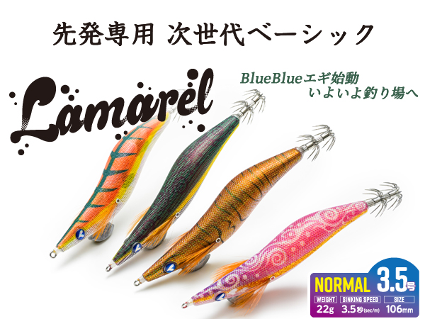
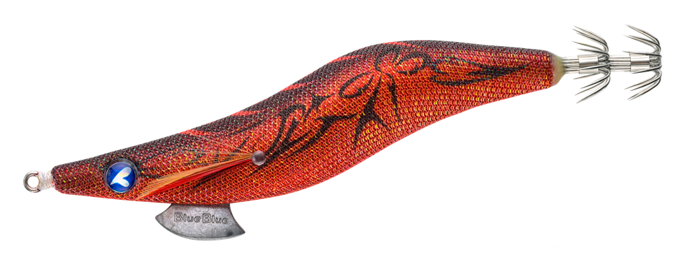
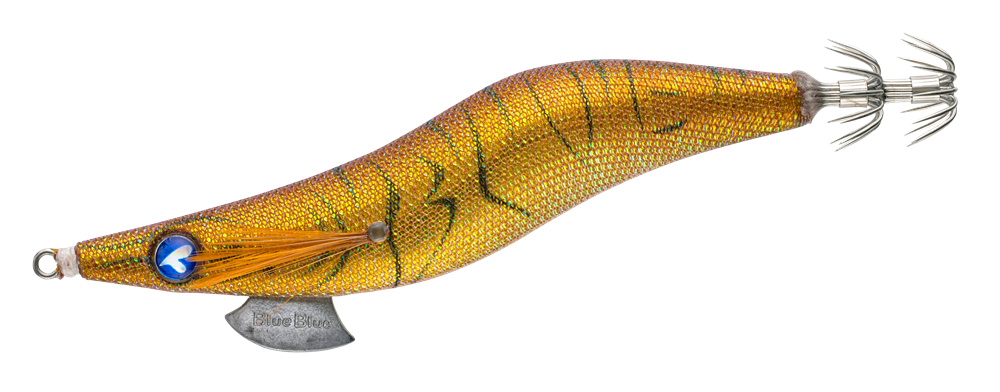
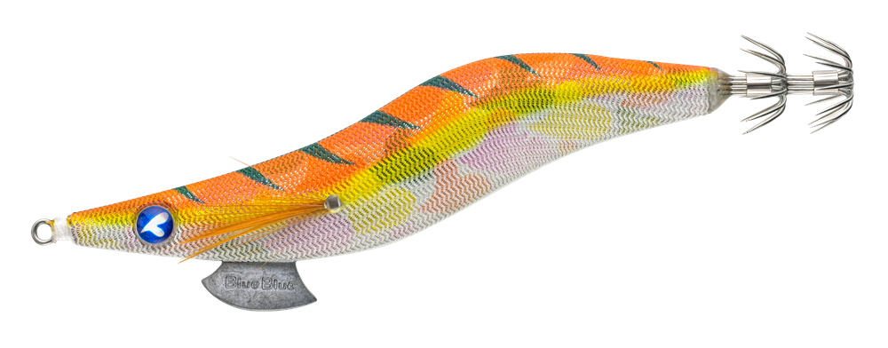
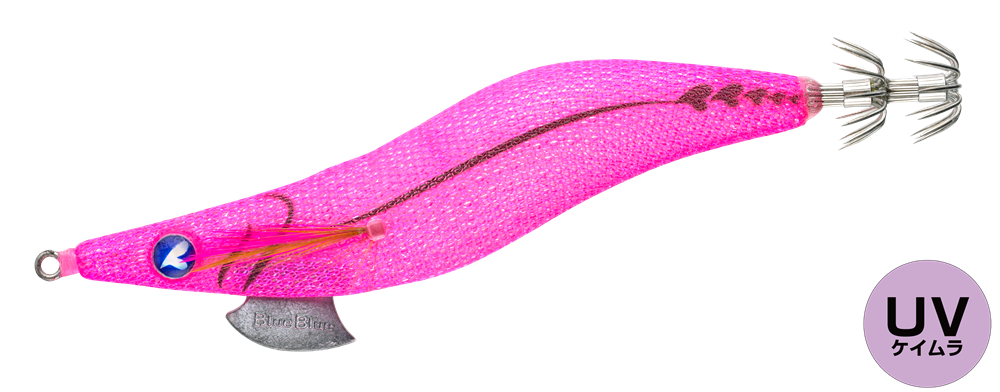
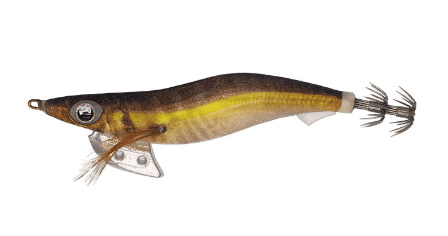

ラマレル
（Lamarel）
ラマレルはBlueBlue（ブルーブルー）のエギです。
シーバスや青物のルアーで人気のブルーブルーから初めて登場するエギで、エギンガーの片山愛海さんが監修。キャッチコピーは「先発専用 次世代ベーシック」で、スレたイカにも通用する、基本に忠実な使いやすいエギとして作られています。3.5号ノーマル（22g・3.5秒/m）が、2026年10月31日以降順次釣具店に並びます。

画像出典:BlueBlue公式HP
スペック
- メーカー
- BlueBlue（ブルーブルー）
- タイプ
- エギ
- サイズ
- 3.5号（ノーマル）・106mm
- 重量
- 22g
- 沈下速度
- 3.5秒/m
- カラー
- 12色
- アクション
- ダートアクション
- 監修
- 片山愛海さん
- ターゲット
- アオリイカ
- 価格
- 希望小売価格1,430円（税込）
- 発売
- 2026年10月31日
▼今すぐチェック
ラマレルの特徴
先発はラマレルにお任せ！片山愛海さん監修の次世代ベーシックエギ
-
今のタックルに合わせた「新しいスタンダード」
軽く、強くなった現代のエギングタックルに合わせて、スタンダードなエギを改めて定義し直したモデル。最初に投げる「先発」として、どんな場所でもまず結ばれることを狙って作られている。
-
イカが反応する安定したフォール姿勢
イカに見切らせない安定したフォール姿勢を追求。沈下速度は3.5秒/mと、初心者でも着底がわかりやすいスピードに設定されている。
-
誰がシャクっても簡単にダート
クセのない操作性で、シャクリに慣れていない人でもキレのあるダートが出せる。港湾から磯まで、フィールドを選ばず使えるのが強みだ。
ラマレルの使い方
基本はキャストして着底させ、2〜3回シャクってダートさせてからフォールで抱かせる、エギングの基本どおりの使い方でOK。
沈下速度3.5秒/mのノーマルタイプなので、水深5mなら約17〜18秒で着底する。着底のたびにラインの動きを見て、根掛かりを避けながら探っていこう。
まず状況を探る1本目として投げ、反応を見てから沈下速度やカラーの違うエギに替えていくのがオススメ。
ラマレルの得意な状況
3.5号は、秋の良型から春の大型アオリイカまで狙える、エギングの基本サイズ。
港湾・堤防・磯とフィールドを選ばず、水深5〜10m前後のポイントを広く探るのに向いています。初めてのポイントで、まず状況を確かめたいときに頼れる1本です。
ワンポイント
12色のうち、♯03・♯05・♯08・♯13はUV（ケイムラ）、♯06はグロー入りのカラー。朝夕マズメや濁り潮ではUV・グロー系、日中の澄み潮ではナチュラル系と使い分けると、先発の1本からローテーションを組みやすくなります。
釣具店には10月31日以降順次並ぶ見込みで、公式オンラインショップへの入荷は未定です。
オススメカラー
ラマレルは全12色。その中から、タイプの違う4色を紹介します。

♯02 オールイン赤系のボディに濃い模様が入った、シルエットのはっきり出るカラー。朝夕マズメや少し濁りが入った日に使いやすい。

♯04 ゴールデンシュリンプ金ボディにエビの模様を入れたカラー。光をしっかり反射するので、日中の澄み潮から曇りの日まで出番が多い。

♯07 なるみかんオレンジの背にエビの模様が入ったアピール系カラー。目立ちやすく、先発で反応を見る1本目に使いやすい。

♯13 ピンキーピンキー鮮やかなピンクにUV（ケイムラ）を組み合わせたカラー。ローライトや濁り潮で存在感を出したいときに。
画像出典:BlueBlue公式HP
ラマレルに似ているルアー
-
 ゲキダキ カミナリ
ジャッカル
詳細はこちら＞
ゲキダキ カミナリ
ジャッカル
詳細はこちら＞
飛距離・ダート・フォールの安定性を追求した新作エギ。ダートとフォールを重視する考え方が共通する。
-

エギ王K ヤマシタ 詳細はこちら＞エギングの定番ベーシックエギ。3.5号は22g・約3秒/mと、ラマレルとほぼ同じ重さで使い比べやすい。
-
 エギ政 改
DUO
詳細はこちら＞
エギ政 改
DUO
詳細はこちら＞
リニューアルした人気エギ。3.5号もそろい、シャローから深場まで対応できる。